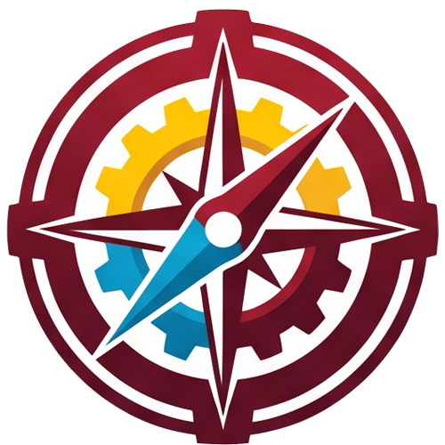
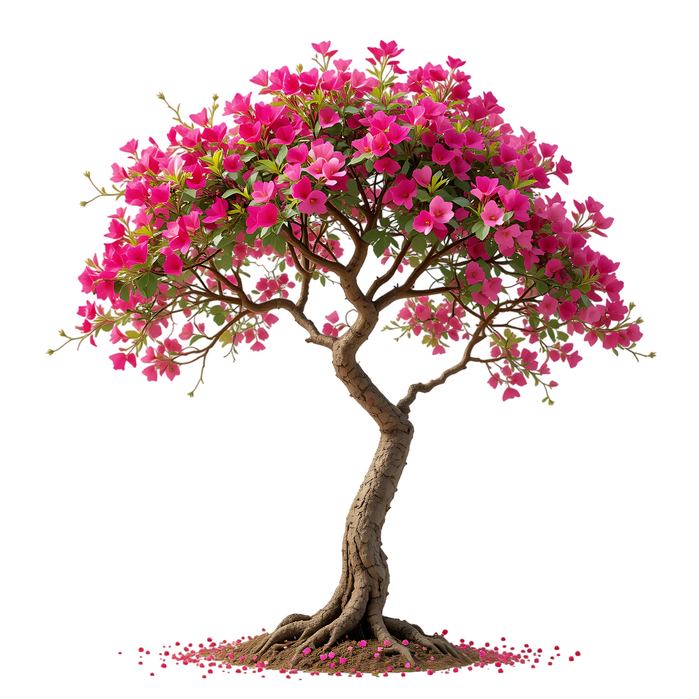

เกี่ยวกับ เทคโนภาคฯ
NORTHEASTERN TECHNOLOGICAL COLLEGE
วิสัยทัศน์ Vision
เป็นผู้นำด้านอาชีวศึกษา ผลิตและพัฒนากำลังคนด้านอาชีวศึกษาสู่มาตรฐานวิชาชีพ มีวินัย จิตสำนึกรักษ์สิ่งแวดล้อม

พันธกิจ Mission
- ผลิตและพัฒนากำลังคนด้านอาชีวศึกษาสู่มาตรฐานวิชาชีพ มีคุณลักษณะอันพึงประสงค์ สอดคล้องกับความต้องการของสถานประกอบการ ชุมชน สังคม
- พัฒนาหลักสูตรและกระบวนการเรียน-การสอน ให้มีความยืดหยุ่น เชื่อมโยงกับมาตรฐานวิชาชีพ
- พัฒนาเครือข่ายความร่วมมือกับสถานประกอบการ ศิษย์เก่า และหน่วยงานทั้งภาครัฐและเอกชน
- ส่งเสริมการวิจัย นวัตกรรม และสิ่งประดิษฐ์ของครูและผู้เรียนเพื่อพัฒนาวิชาชีพอย่างเป็นระบบ
- ส่งเสริมและพัฒนาสมรรถนะครูและบุคลากรทางการศึกษา
- ปลูกฝัง วินัย จิตอาสาและจิตสำนึกรักษ์สิ่งแวดล้อม โดยยึดหลักปรัชญาของเศรษฐกิจพอเพียง
“ทักษะดี มีวินัย ใฝ่เรียนรู้”
“วิทยาลัยแห่งการสร้างอาชีพ”
คุณวุฒิ
ความรู้ที่ผู้จบการศึกษาจะได้รับหลังจากสำเร็จการศึกษาจากสถาบัน ซึ่งแสดงถึงความรู้ ความสามารถและทักษะด้านวิชาชีพ โดยนักศึกษาเกิดทักษะและมีความรู้ความสามารถแต่ละสาขา สามารถนำความรู้และทักษะที่ได้ไปใช้อย่างมีประสิทธิภาพ และสามารถนำความรู้ไปประกอบอาชีพได้อย่างมีความสุข
คุณธรรม
การประพฤติปฏิบัติในสิ่งที่ดีงาม ได้แก่ การทำความดี ไม่เบียดเบียนผู้อื่น มีความซื่อสัตย์ ความเสียสละ ความอดทน และความรับผิดชอบ การทำความดีทั้งทางด้านร่างกาย จิตใจ อารมณ์ และสิ่งแวดล้อม สามารถทำงานร่วมกับสังคมได้ ไม่เอารัดเอาเปรียบสังคมและไม่ทำให้ผู้อื่นเดือดร้อน
คุณภาพ
ความสามารถและทักษะวิชาชีพ ผู้สำเร็จการศึกษาแต่ละสาขาวิชาชีพ ได้เป็นบุคลากรที่มีคุณค่าของสังคม สามารถนำความรู้และทักษะที่ได้ไปใช้ในการประกอบอาชีพได้อย่างมีประสิทธิภาพ
สัญลักษณ์ ตราประจำวิทยาลัย
เป็นรูปของฟันเฟืองมีจำนวน 32 ฟัน หมายถึง ช่างอุตสาหกรรม ที่มีการทำงานสัมพันธ์กันอย่างต่อเนื่อง ขยายความ รูปฟันเฟืองล้อมรอบภายในมีรูปวงกลม 2 วง ระหว่าง 2 วงนั้น มีตัวหนังสือ ชื่อวิทยาลัยเทคโนโลยีภาคตะวันออกเฉียงเหนือ อยู่ภายในเป็นส่วนครึ่งวงกลมด้านบนเป็นภาษาไทย และครึ่งวงกลมด้านล่างเป็นภาษาอังกฤษ NORTHEASTERN TECHNOLOGICAL COLLEGE
ภายในวงกลมแบ่งออกเป็น 3 ส่วน
อักษรย่อ
ภาษาไทย ว.ภ.น. ภาษาอังกฤษ N.E.T.สีประจำวิทยาลัย
เลือดหมู
หมายถึง ช่างอุตสาหกรรม
เหลือง
หมายถึง สีประจำจังหวัด คือ สีของดอกคูน
ฟ้า
หมายถึง พาณิชยกรรมและบริหารธุรกิจ

ต้นไม้ประจำวิทยาลัย ต้นเฟื่องฟ้า
ต้นเฟื่องฟ้า ซึ่งหมายถึง ความเป็นสิริมงคล ค้ำจุนให้กิจการวิทยาลัยมีความเจริญก้าวหน้า ยั่งยืน และมีความมั่นคงสืบต่อไป
ตราสัญลักษณ์รองอย่างเป็นทางการ Sub-Logo Signature
ตราสัญลักษณ์รองอย่างเป็นทางการ (Sub-Logo Signature) ถูกออกแบบเพื่อเป็นเครื่องหมายในการสื่อสารที่เป็นแบบเดียวกันทั้งวิทยาลัย เพื่อให้นักเรียน นักศึกษา บุคลากร ตลอดจนประชาชนทั่วไป สามารถจดจำและมีความน่าเชื่อถือต่อวิทยาลัย โดยมีตัวอักษรย่อ NET College ซึ่งย่อมาจากชื่อภาษาอังกฤษของวิทยาลัย คือ “NORTHEASTERN TECHNOLOGICAL COLLEGE” ตัว N มีลูกศรชี้ขึ้นบ่งบอกถึงการก้าวไปสู่วิทยาลัยแห่งการสร้างอาชีพ ตัวอักษรอวบอิ่ม แสดงถึงความอุดมสมบูรณ์
สีของตราสัญลักษณ์ มาจากสีประจำสถาบัน ได้แก่ สีเลือดหมู สีเหลือง สีฟ้า ถูกออกแบบให้ดูทันสมัย สไตล์โมเดิร์น และมีสีสันสดใส ฟันเฟือง 3 ดวง หมายถึง การพัฒนาอย่างไม่หยุดนิ่ง และสีเลือดหมู แทนช่างอุตสาหกรรม สีเหลือง แทนศิลปกรรม และสีฟ้าแทนพาณิชยกรรมและบริหารธุรกิจ และสีดำ คำว่า “COLLEGE” แทนความรอบรู้ เชี่ยวชาญและประสบการณ์ของบุคลากรในวิทยาลัย
ทำเนียบครูใหญ่/ผู้อำนวยการ วิทยาลัยเทคโนโลยีภาคตะวันออกเฉียงเหนือ จังหวัดขอนแก่น
ดร.มังกร ภักดิ์โพธิ์
พ.ศ. 2518 - 2542
ดร.ชำนาญ อุปฮาด
พ.ศ. 2542 - 2557
นายสมใจ คงคาชาติ
พ.ศ. 2558 - 2564
ดร.สุคนธ์ สุคนธรัตนสุข
พ.ศ. 2564 - 2566
นายภิเษกสิทธิ์ ชุมแวงวาปี
พ.ศ. 2567 - ปัจจุบัน